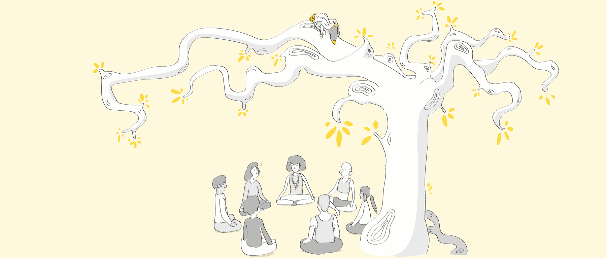

Cours adultes
On commence souvent le yoga pour trouver un mieux-être
physique et psychique, s'assouplir, se (re)mettre en mouvement, se poser,
développer la présence à soi, respirer…
En pratiquant régulièrement le yoga, vous trouverez très vraisemblablement
cela… peut-être autre chose aussi…
Pour qui ?
Pour tous !
Le yoga est une pratique accessible à tous et bénéfique à tous. Le cliché de la souplesse nécessaire à la pratique du yoga a la dent dure et éloigne du tapis des personnes qui pourraient y trouver des bienfaits. C'est dommage ! Venez comme vous êtes et ce sera très bien. Quels que soient votre âge, votre poids, votre souplesse, votre tempérament… le yoga fait du bien.
Possibilité de cours particuliers en individuel ou en petit groupe constitué d'au moins trois personnes.
Entreprise, association ? Vous souhaitez porter un projet de bien-être sur votre lieu de travail et accompagner vos collaborateurs sur des sujets clés :
- réduction du stress, prévention du burn-out
- amélioration de la posture
- cohésion du groupe
Sous forme d'ateliers thématiques ponctuels ou réguliers, nous pouvons
réfléchir ensemble à une offre adaptée à votre cadre professionnel.
Contactez-moi au 06 71 41 57 45
Où et quand ?
Cours à La Ciotat, à Au vent dans les branches (nouvelle fenêtre), 17 rue Emmanuel Barthélémy.
Natha Yoga
- Lundi 18h – 19h15
- Mardi 9h – 10h15
- Mercredi 19h – 20h15
- Vendredi 12h – 13h15 et 18h30 – 19h45
Respiration, concentration / méditation, relaxation
- Lundi 19h30 – 20h45
Yoga sur chaise
- Mardi 10h45 – 11h45
Comment ça marche ?
Par les postures, le corps agit
Par la respiration, les émotions, les pensées s'apprivoisent, se calment, l'énergie s'active, circule
Par la concentration, le mental se dompte, l'attention s'accroît
Dans les exercices, nous lierons fréquemment les trois plans pour une
pratique complète et régénérante.
Toutes les postures sont adaptables afin d'être accessibles à tous.
Être à l'écoute de soi est un des points essentiels de la pratique. Percevoir la différence entre l'inconfort, opérant, utile et la douleur, qui dit stop.
Loin de la performance ou de la prouesse physique, la pratique permet de développer l'endurance, la détermination, la persévérance à son rythme, dans une écoute bienveillante de soi.